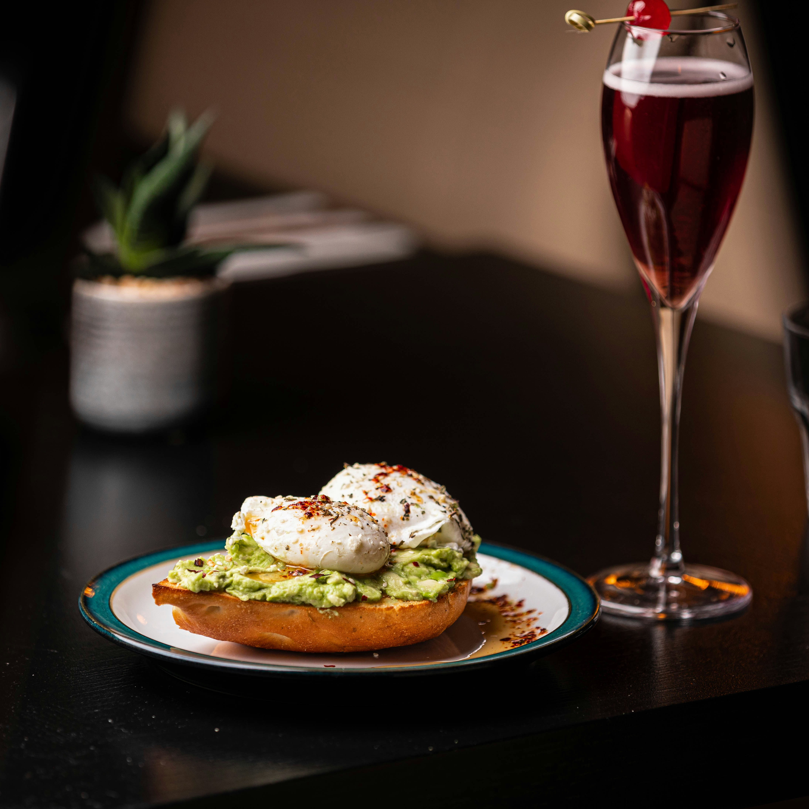

Egg Avocado Toast

Description
This 4-ingredient egg avocado toast, topped with chopped hard boiled egg and sprinkled with everyhing bagel seasoning, makes a satisfying breakfast or lunch in just minutes.
Ingredients
- 1 slice sourdough bread, toasted
- 1/2 cup mashed Haas avocado
- 1 large hard boiled egg
- 1 teaspoon Everything Bagel Seasoning
Directions
- Smear mashed avocado on toast. Sprinkle with everything bagel seasoning. Top with egg. Season with salt and pepper.